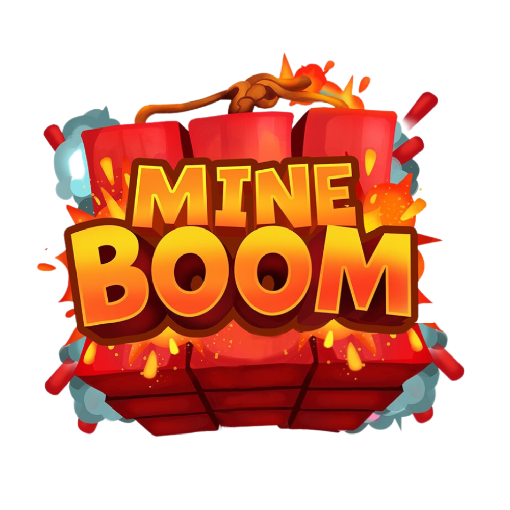

<section class="bg-gradient-to-t from-mb-fondo-4 to-mb-fondo py-20 px-4 text-center">
    <div class="max-w-4xl mx-auto">
        
        <h2 class="text-4xl md:text-6xl font-bold leading-tight mb-4">
            ¡Tu futuro <span class="text-yellow-400">Gamer</span> es lo mejor de los mejor <br>
            está <span class="text-yellow-400">aquí</span>
        </h2>
        <p class="text-lg md:text-xl text-white">
            Encontrar el juego perfecto para ti es fácil con nuestra amplia selección de títulos.<br>
            Explora nuestra tienda de juegos y descubre los mejores títulos para tu consola favorita.
        </p>
    </div>


    onclick="openModal('example'); return false;"
</section>

# MineBoom - Tienda de Juegos Digital

## Descripción
Tienda de juegos digital con HTML5, TailwindCSS v4, JavaScript vanilla.

## Prompts
**Principal**: "Crear tienda de juegos MineBoom con diseño oscuro, acentos naranja, navegación responsive, sistema de modales."

**Técnico**: "Frontend HTML5 semántico, TailwindCSS v4 custom theme, JavaScript ES6+, glassmorphism effects."

## Estructura
- [index.html](cci:7://file:///c:/Users/APSTI%20D204/Desktop/web_final_xd/index.html:0:0-0:0) - Página principal
- [views/](cci:7://file:///c:/Users/APSTI%20D204/Desktop/web_final_xd/views:0:0-0:0) - Secciones (tienda, foro, noticias, media, soporte, auth)
- [src/input.css](cci:7://file:///c:/Users/APSTI%20D204/Desktop/web_final_xd/src/input.css:0:0-0:0) - Estilos personalizados
- `js/` - Funcionalidad
- `modals/` - Sistema de modales

## Instalación
```bash
npm install
npm run dev